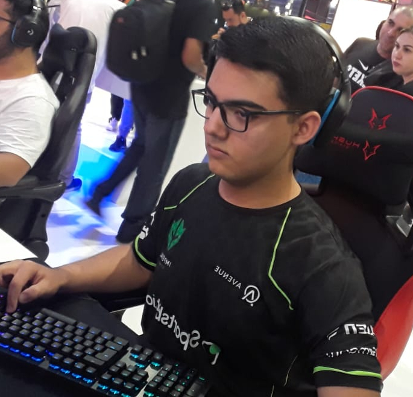
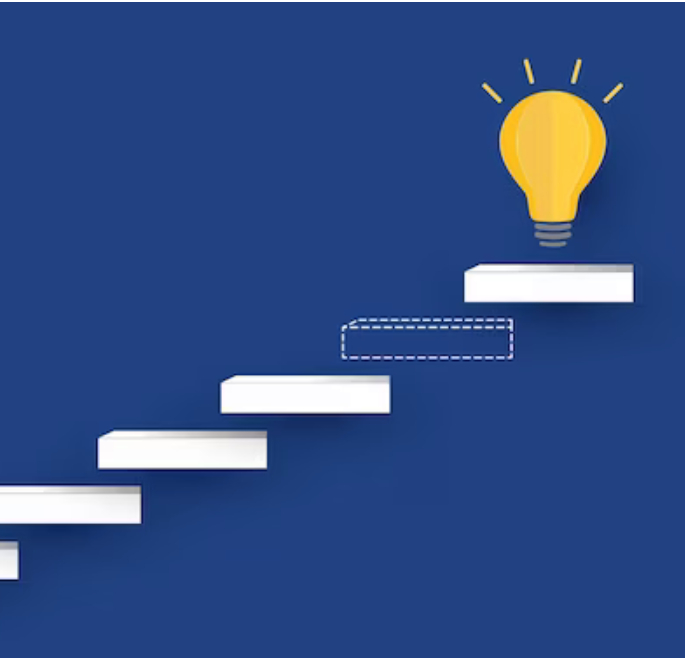

Você sabe onde quer chegar?
Todos nós passamos por esse momento, onde precisamos definir onde queremos chegar, como, quando e afins. Para a maioria esse momento é aterrorizante, já que na maior parte dos casos nós não recebemos apoio familiar, que convenhamos que é algo que ajudaria muito nesse processo. É aqui onde amadurecemos, nos descobrimos, nos entendemos mais profundamente e finalmente podemos nos aceitar. A jornada do autoconhecimento é uma das mais difíceis, mas também é uma das mais recompensadoras. Enfim, isso não é um site de coaching, vim aqui falar sobre mim e oque eu descobri sobre eu mesmo durante essa fase amedrontadora.
Sobre mim!
Tenho plena consciência de quem eu sou?
Creio que ninguém tenha plena e total consciência de quem é, pois este é um processo que exige muitas vivências, experiências e reflexões durante toda a vida, mas no meu caso, diria que meu autoconhecimento é suficiente para minha realidade atual.
Aonde quero chegar?
Meu objetivo principal é atingir a independência e estabilidade financeira, de forma que possa me sustentar e viver a vida que sempre quis. Para isso, escolhi seguir a área de TI, onde inicialmente pretendo atuar como desenvolvedor, mas por se tratar de uma área muito incerta, posso acabar exercendo alguma outra função.
O que devo desenvolver?
A característica de maior prioridade são as soft skills, na qual vai me permitir me relacionar melhor com os outros, da mesma maneira que preciso desenvolver minha saúde mental, relações sociais e familiares e etc. Eu particularmente considero tudo isso tão importante quanto o desenvolvimento técnico.